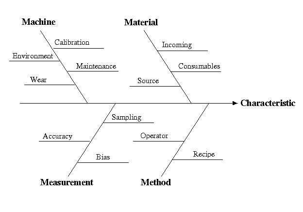

3.
Production
Process Characterization
3.1.
Introduction to Production Process
Characterization
3.1.3.
Terminology/Concepts
|
|
Black box model and fishbone diagram
|
As we will see in Section 3 of this chapter, one of the first steps
in PPC is to model the process that is under investigation. Two very useful
tools for doing this are the black-box model and the fishbone
diagram.
|
|
We use the black-box model to describe our processes
|
We can use the simple black-box model, shown below,
to describe most of the tools and processes we will encounter in PPC.
The process will be stimulated by inputs. These inputs can either be controlled
(such as recipe or machine settings) or uncontrolled (such as humidity,
operators, power fluctuations, etc.). These inputs interact with our process
and produce outputs. These outputs are usually some characteristic
of our process that we can measure. The measurable inputs and outputs can
be sampled in order to observe and understand how they behave and relate
to each other. |
|
Diagram of the black box model
|

|
|
These inputs and outputs are also known as Factors and
Responses, respectively.
-
Factors
-
Observed inputs used to explain response behavior (also called explanatory
variables). Factors may be fixed-level controlled inputs or sampled uncontrolled
inputs.
-
Responses
-
Sampled process outputs. Responses may also be functions of sampled outputs
such as average thickness or uniformity.
|
| Factors and Responses are further classified
by variable type |
We further categorize factors and responses according to
their Variable Type, which indicates the amount of information they
contain. As the name implies, this classification is useful for data modeling
activities and is critical for selecting the proper analysis technique.
The table below summarizes this categorization. The types are listed in
order of the amount of information they contain with Measurement
containing the most information and Nominal containing the
least.
|
|
Table describing the different variable types
|
| Type |
Description |
Example |
| Measurement |
discrete/continuous, order is important, infinite range |
particle count, oxide thickness, pressure, temperature |
| Ordinal |
discrete, order is important, finite range |
run #, wafer #, site, bin |
| Nominal |
discrete, no order, very few possible values |
good/bad, bin, high/medium/low, shift, operator |
|
|
Fishbone diagrams help to decompose complexity
|
We can use the fishbone diagram to further refine the modeling process.
Fishbone diagrams are very useful for decomposing the complexity of our
manufacturing processes. Typically, we choose a process characteristic
(either Factors or Responses) and list out the general categories that
may influence the characteristic (such as material, machine method, environment,
etc.), and then provide more specific detail within each category. Examples
of how to do this are given in the section on Case
Studies. |
|
Sample fishbone diagram
|

|